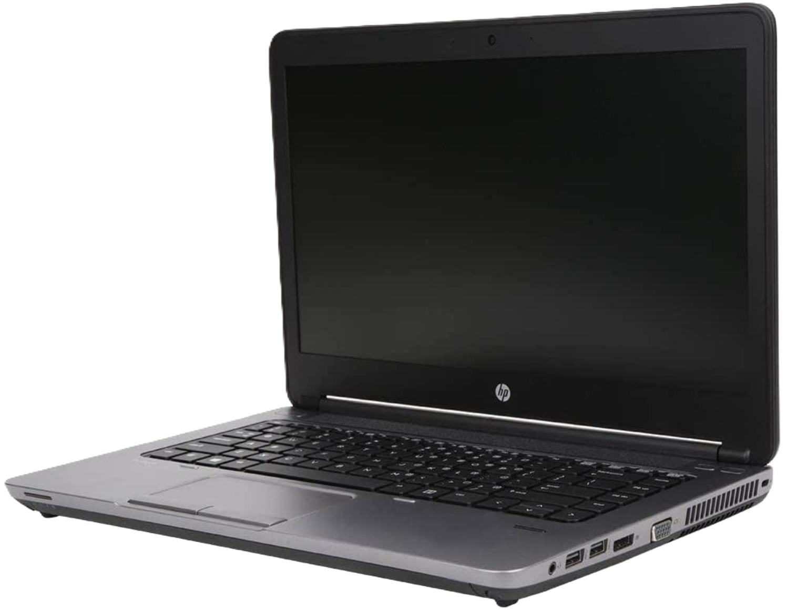

MY FIRST HOME LAB / HP PROBOOK 645 G1
From an Old Laptop to a Working Home Lab.
I repurposed an HP ProBook 645 G1 into a Proxmox server to learn what it takes to run and maintain my own infrastructure.
I work as an IT Support Technician and study Computer & Network Systems Administration. This is my first personal lab: a place to work through virtualization, Linux administration, containers, DNS, remote networking, and recovery myself.

PHYSICAL HOST
What I’m working with
- Processor
- AMD A8-5550M APUwith Radeon HD Graphics
- Logical CPUs
- 4
- Usable memory
- ≈ 6.96 GiB
- Storage
- 500 GB SSD
- Hypervisor
- Proxmox VE 9.2.21
- Application VM
- 2 vCPUs · 2 GiB RAM32 GB virtual disk
A FEW PLACES TO START
The work I want to show.
I installed the services, worked through the networking, and set up my first backups. These are the parts I learned the most from.
Reaching my lab while away from home
I kept my personal Tailscale network separate from school, approved routes to two lab hosts, and tested an optional exit node for using my home internet connection remotely.
Tailscale, routing & remote access ↗TROUBLESHOOTINGGetting Pi-hole working on my Dell
I tested DNS blocking on my Dell and worked around a gateway limitation. An iPhone Private Relay warning led me to choose different settings for each device.
Read the DNS case study ↗